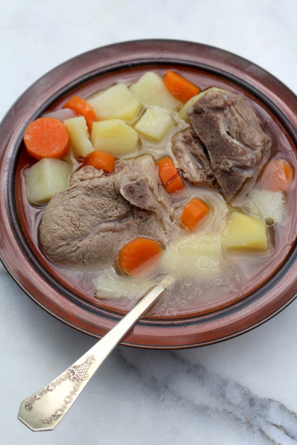

Odin's fav soup
Kjötsúpa is a simple Icelandic lamb soup made from braising cuts of lamb or mutton and stored root vegetables.
The meat is braised bone-in and creates its own stock while the coarse root vegetables give the soup a hearty texture and a subtle sweetness.
Icelandic Lamb Soup (Kjötsúpa)

- Place meat in a large soup pot, such as a 6-quart dutch oven, and cover with cool water.
- Slowly bring the meat and water to a boil and then reduce the heat to very low.
- Simmer the meat for about an hour, until it’s very tender. Skim away any surface scum (if necessary).
- Add the chopped vegetables and simmer until they’re tender, about 20 more minutes.
Serve Kjötsúpa hot.